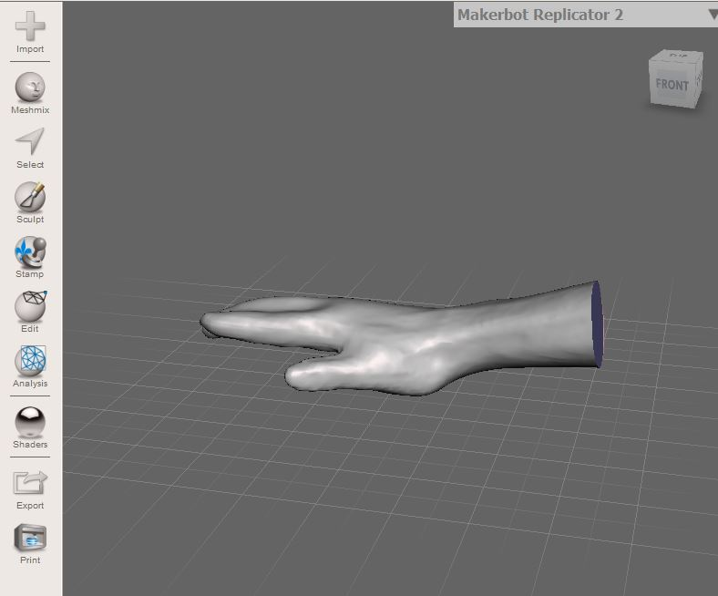
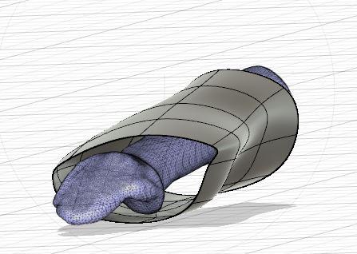
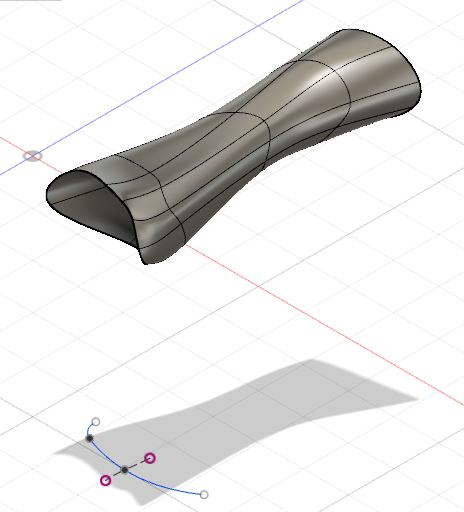
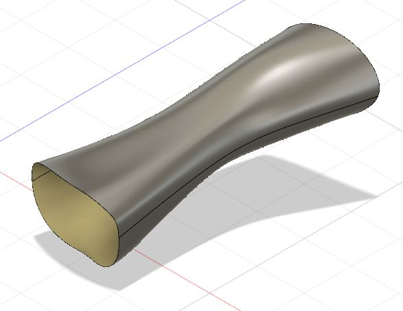
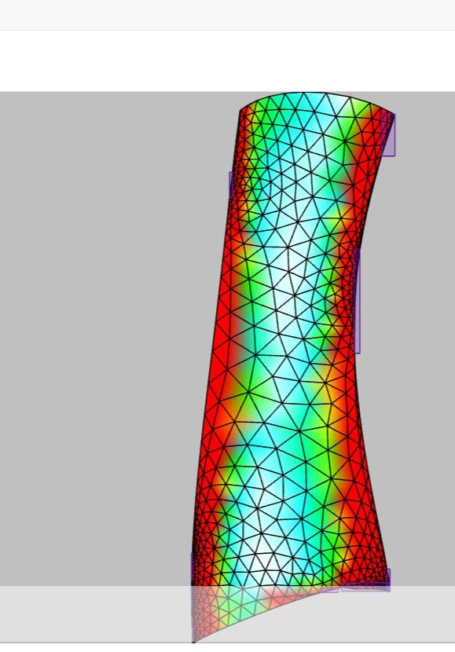
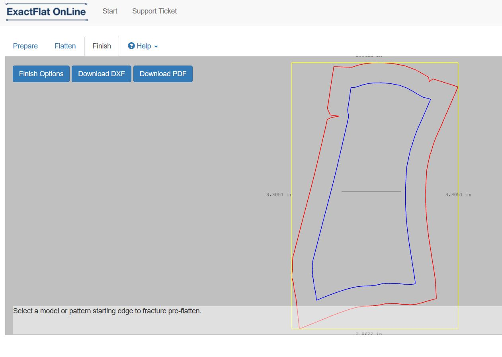

From 3D to 2D
Last week we obtained 3D scans of different parts of the body.
But these are usually not perfect, so it is necessary to clean them.
To clean them we use the Meshmixer program.
First we import the scaner. I select the hand.
Then we eliminate the parts that do not interest us. To do this, we select everything we want to delete with 'select' and then press the Discard option.
Other tools that we can use are transform, sculpt and finally we must press 'make solid' to end the process. 
Once we have our scanner clean, we will edit it with autodesk.
We create a cylinder around the hand, and we edit it so it is as close as possible to our hand.
We do this by pressing 'Edit form'.

Once we have it, we will use only the mold and the hand will not be necessary.
To continue, it is necessary to pass our figure to Model mode.
Then we eliminate both the front of the fingers as the back, because they will not be useful.
For this we use 'Sketch', 'Spline' and finally 'Fit point spline', creating a line that separate our figure in two.

The final result is:

The last step is to upload the bodies to Exact Flat. For this we select the pieces and then upload them.
This program will allow us to move our 3D figures to 2D.
The steps for this are:
1. Prepare: Adaptive Remesher of Remesher.
2. Flatten: Fracture of Pre-Flatten.
For this purpose we have to select different lines.

3. Finish.
